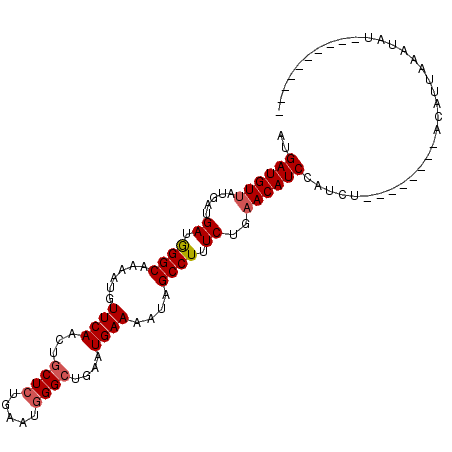

| Sequence ID | hg18.chr11 |
|---|---|
| Location | 93,104,298 – 93,104,389 |
| Length | 91 |
| Max. P | 0.771915 |
| Location | 93,104,298 – 93,104,389 |
|---|---|
| Length | 91 |
| Sequences | 6 |
| Columns | 107 |
| Reading direction | reverse |
| Mean pairwise identity | 76.15 |
| Mean single sequence MFE | -20.73 |
| Consensus MFE | -17.72 |
| Energy contribution | -18.00 |
| Covariance contribution | 0.28 |
| Combinations/Pair | 1.05 |
| Mean z-score | -0.90 |
| Structure conservation index | 0.85 |
| SVM decision value | 0.53 |
| SVM RNA-class probability | 0.771915 |
| Prediction | RNA |
Download alignment: ClustalW | MAF
>hg18.chr11 93104298 91 - 134452384 ACGAUGUUAUGAUGAUGGGCGAAAUGUUCAACUGCUCUGAAGGGGCUGAAUGAAAAUGGCCUUUCUGAACAUCCAUUU--------ACAUUAAAUAU--------UG .(((((((.(((((((((.....(((((((........((((((.(...........).)))))))))))))))))..--------.))))))))))--------)) ( -20.90) >oryCun1.scaffold_215179 59410 93 - 62759 GUGAUGUCAUGAUGAUGGGCCAAAUGUUCAACUGCUCUGAAUGGGCUGAAUGAAAAUAGCCUUUCUGAACAUCC------------ACAUUGAAUGUAUGC--UAUG (((((((((.((....((((......((((...((((.....))))....))))....)))).)))).)))).)------------)).............--.... ( -19.90) >canFam2.chr21 44003873 97 + 54024781 GUGAUGUUAUGAUGACAGGCAAAAUGUUCAACUGCUCUGAAUGGGCUGAAUGAAAGUAGCCUUUCUGAACAUCCAUCUAAAUGUAAAAGUUAACCAU---------- (.((((((.....((.((((......((((...((((.....))))....))))....)))).))..))))))).......................---------- ( -19.80) >dasNov1.scaffold_2894 17567 95 - 85457 AUGAUGUUAUGAUGAUGGGCAAAAUGUUCAACUGCUCUGAAUGGGCUGAAUGAAAGCAGCCUUUCUGAACAUCCAUCC--------ACAUUAAAUUAGGCUGU---- .((((((...((((.(((((.....)))))..((.((.(((.((((((........))))))))).)).))..)))).--------))))))...........---- ( -22.70) >rn4.chr8 116925422 78 + 129041809 AUGAUGUUGUGAUGAUGGGCAAAAUGUUCAACUGCUCUGAAUGGGCUGAAUGAAAGUAGCCUUUCUGAACAUCUGUGU----------------------------- ..((((((..((....((((......((((...((((.....))))....))))....)))).))..)))))).....----------------------------- ( -19.30) >echTel1.scaffold_316886 81342 91 + 105239 GGGAUGUUAUGAUGACAGGCAAAUUGUUCAACUGCUCUGAAUAGGAUGAGUGAAAAUGGCCUUUCUGAACAUCCAUGU--------ACAUUAAAGAUUG-------- .(((((((.....((.((((......((((.((..(((.....)))..))))))....)))).))..)))))))....--------.............-------- ( -21.80) >consensus AUGAUGUUAUGAUGAUGGGCAAAAUGUUCAACUGCUCUGAAUGGGCUGAAUGAAAAUAGCCUUUCUGAACAUCCAUCU________ACAUUAAAUAU__________ ..((((((.....((.((((......((((...((((.....))))....))))....)))).))..)))))).................................. (-17.72 = -18.00 + 0.28)



Generated by rnazCluster.pl (part of RNAz 1.0) on Fri Nov 24 16:48:59 2006